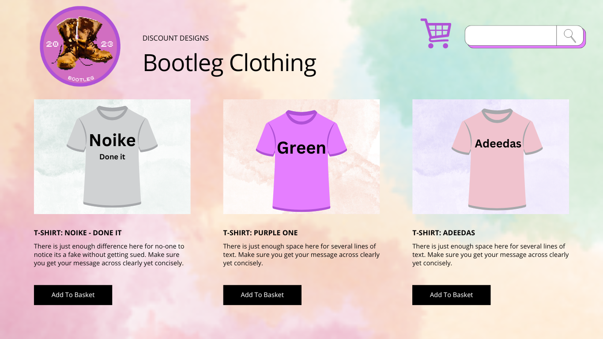
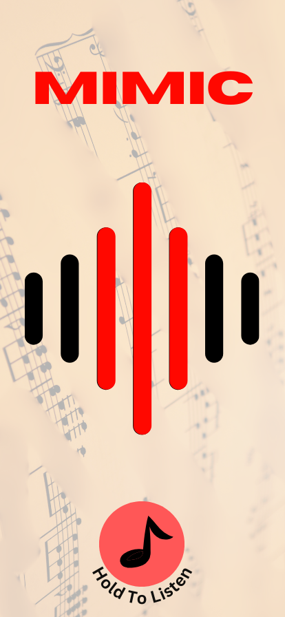
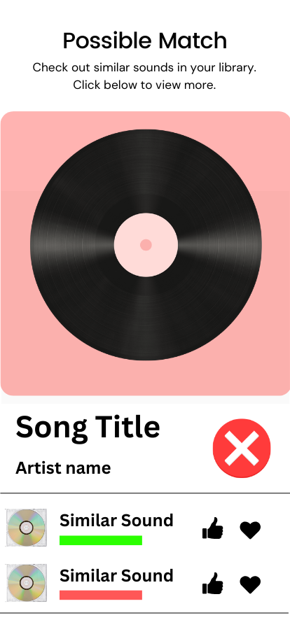
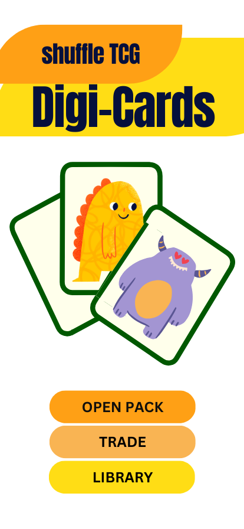
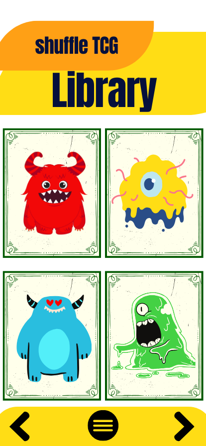
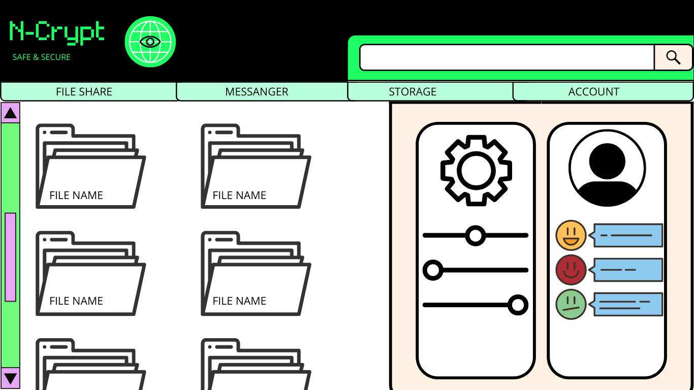
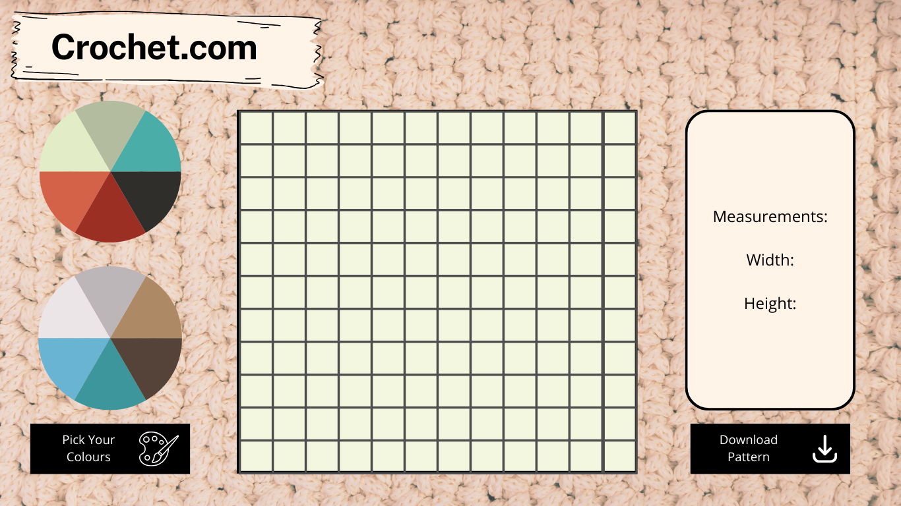
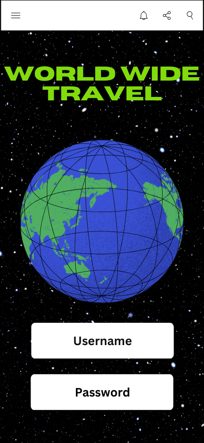
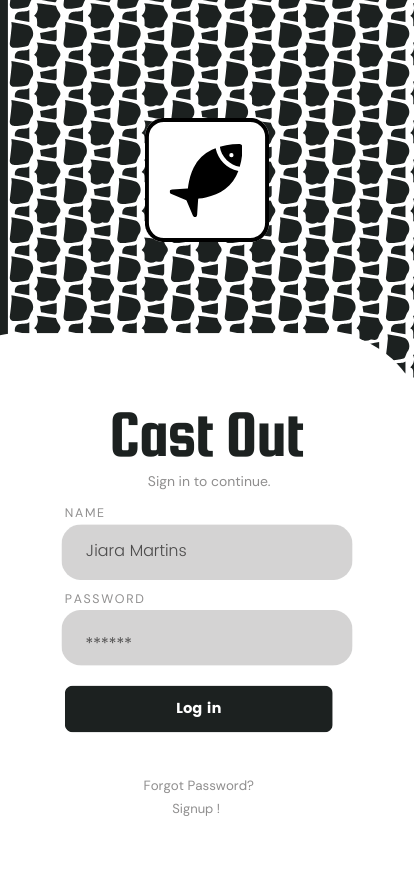

At a glance
This assignment challenged me to generate a varied set of digital product ideas. The screens below are design studies, not finished services.

A collection of app and website mock-ups exploring different audiences, interactions and visual directions.
This assignment challenged me to generate a varied set of digital product ideas. The screens below are design studies, not finished services.
This is a university concept and portfolio study. The page documents the designs and research that survive, rather than presenting a launched product.
The brief called for ideas across websites, mobile apps and other digital products, with different users and technical demands. I made quick mock-ups to test what each idea might look like before choosing whether to develop it further.









Some concepts remained quick visual experiments. Others gave me useful starting points for later work. Keeping them together shows the range of briefs I tried and the difference between a promising screen and a product that has actually been built.